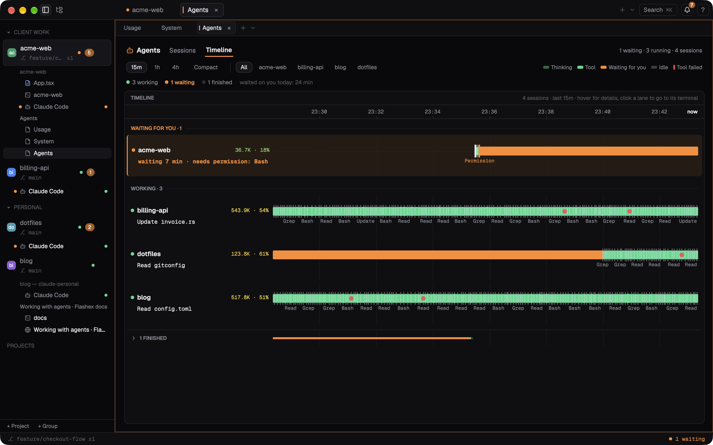
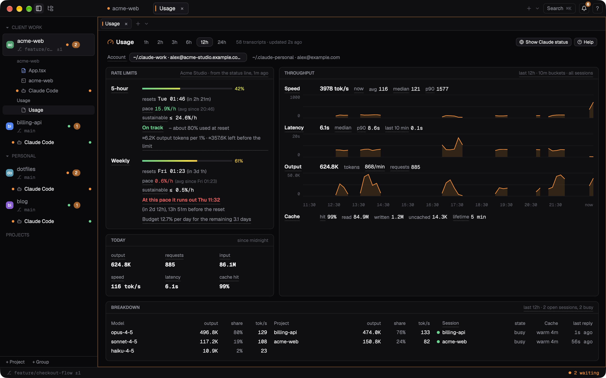
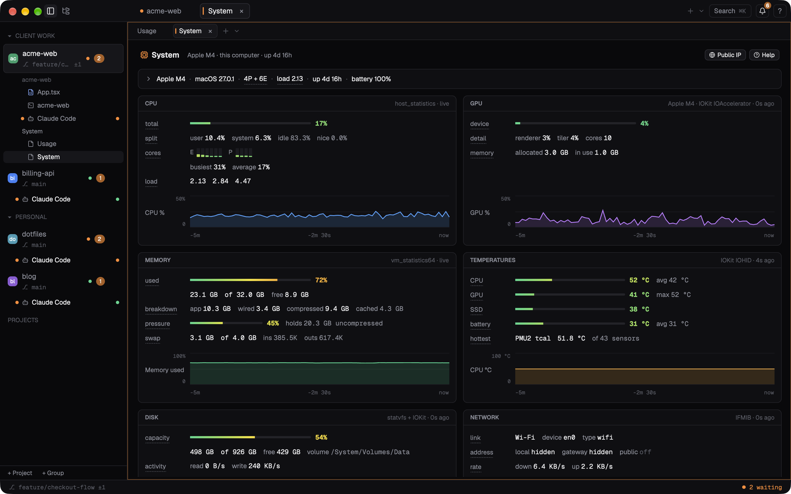

Dashboards
Three dashboards open from the command palette as tabs of the current pane. They can be split, moved and closed like any pane, and come back after a restart.
Open them with ⌘K › Agents Dashboard, Usage Dashboard or System Dashboard. None has a default shortcut; bind agents_dashboard, usage_dashboard or system_dashboard in keybindings.toml. Words with a dashed underline explain themselves when you point at them. ⌘= and ⌘- in a dashboard make its text, rows and charts bigger or smaller, 10 % at a time from 80 % to 160 % (⌃⌘0 puts it back); the cards then fill fewer or more columns. Every dashboard starts from [dashboards] text_scale (Settings › Appearance › Dashboard text size).
Agents
Every Claude Code session in the window: its project, folder and terminal, whether it is waiting for you, running, idle or ended, what it is doing right now ("Bash cargo test", "waiting: needs permission: Bash"), for how long, its model and how full its context is. Each session's subagents are listed under it with their task, tool, model and context.
- Sessions lists them, those waiting for you first. Filter with the chips or just type; ↑ ↓ and Return (or a click) jump to a session's terminal, Space folds its subagents. The selected session offers Reload, Interrupt (sends Esc to its terminal after asking) and Transcript (the conversation, read-only). Ended sessions move to a folded Recently ended section.
- Timeline shows what the sessions did over the last 15 minutes, hour or 4 hours: one lane per session, coloured stretches for thinking, running a tool, waiting for you and idle, and marks for prompts, tools, permission questions and failed tools. Point at a lane to read what happened at that moment; click it to go to that session's terminal.
The Timeline

- Groups. Lanes are grouped under Waiting for you · 2 and Working · 3 headers, waiting first. Idle and ended sessions fold into one "▸ N finished" row, and a session's subagents into "▸ N subagents" under it; a click unfolds them.
- Lanes. Each lane shows its project or terminal and, on a second line, what it is doing or how long it has waited. With only a few sessions the lanes grow to fill the card; with many they keep a minimum height and scroll inside the card. The time axis stays in place while they scroll.
- Tool labels. Under the bar each tool call is named in a word (
Bash,Edit,Read), a failed one in red and a permission question in the accent colour, wherever there is room; when calls crowd together, the newest keep their names. - Details. Pointing at a lane shows what happened at that moment under that lane, so it never covers the lane you are reading.
- Chips. 15m 1h 4h choose the window (or Tab), and Compact brings back denser lanes without tool names. Project chips filter the timeline to one project. The window, Compact, the project and the finished fold are remembered across restarts.
It reads only Claude Code's hook events and, while it is on screen, the model and token counts from the session transcripts. If the hooks are not installed, it offers to install them (see Claude Code hooks).
Usage
Your Claude Code usage across every session on this Mac. When other agents were used in the last 7 days, Agent chips at the top switch to Codex (with its 5-hour and weekly limits), Grok Build, Gemini CLI, Copilot CLI (the output of its answers only: it writes no more), OpenCode (sessions run in Flashex) or pi, read from their own files. The status bar's meter and the limit notice stay Claude Code's.

- Rate limits: the 5-hour and weekly limits, how much is used and when each resets, your pace against the one that would last until the reset, and a forecast ("On track", "Tight", or when it runs out). They come from Claude Code's status line; if they are unknown, Set up in Settings… takes you to the status line row.
- Throughput: tokens per second, latency and output tokens as charts over 1 to 24 hours.
- Today: requests, tokens and how much input came from the prompt cache.
- Breakdown: output and speed per model and per project, and the open sessions with their prompt cache.
Keys: w changes the window, r reads the transcripts again, h opens the Help card that explains every number. With several Claude accounts, chips at the top pick the one shown. Optional and off by default: Show Claude status (incidents from status.claude.com, claude_status) and the usage API fallback (u asks it at once). The dashboard reads only while it is on screen and keeps a small summary so it opens fast; no message text is kept.
System
What this Mac is doing, without administrator rights:

[privacy] hide_host on, the computer's name and addresses are hidden.- a strip with the chip, macOS, cores, load, uptime and battery; its chevron opens the details (
system_details); - CPU (total, user and system, every core by cluster), GPU, Memory (used, app, wired, compressed, cached, pressure, swap), Temperatures (CPU, GPU, SSD, battery), Disk (space, reads and writes, when it fills up), Network (addresses, download and upload, interfaces, the busiest processes) and Processes by CPU and by memory (
system_processespicks the table of a narrow card).
Charts show the last five minutes; point at one to read a value. r reads everything now and h explains every number and where it comes from. The cards fill one to eight columns as the pane allows. Charts keep sampling while the dashboard is open behind another tab, and for ten minutes after you close it. Public IP in the header (off by default, public_ip) shows the address the internet sees.